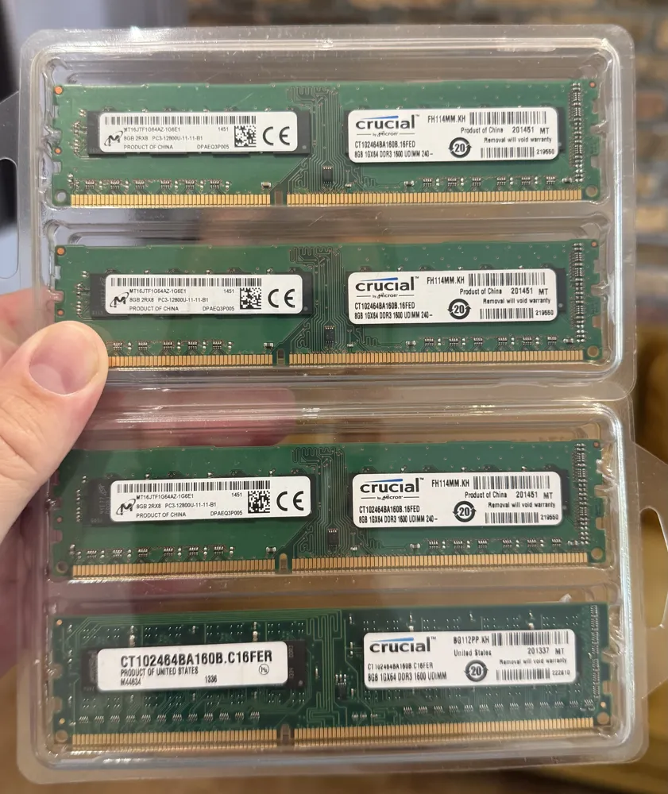

Получил на прошлой неделе 32gb не ноунеймовой памяти. Заработала в dell без каких-либо танцев сходу. Так что все мои
проблемы по запуску памяти на dell 9020 были связаны исключительно с китайской памятью. Появилась возможность воткнуть память в другую машину с потолком в 32gb. Тоже не взлетело.

Комментарии